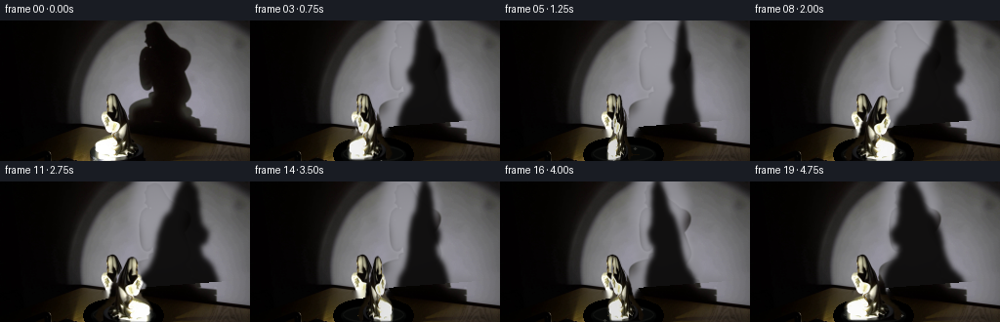
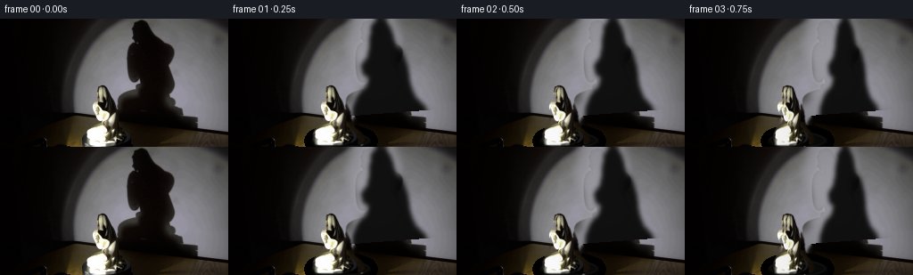

CODING AGENTS AS PIXEL WORLD MODELS
traex/GPT-5.6-Sol · 0084
点击播放 · 原生 RGB 像素
逐轮保存的候选
回放视频、检查图与代码变化。
每份候选均可单独播放。实际图片检查记录在下方工具轨迹中。
候选 01播放与检查图
点击播放 · 原生 RGB 像素

展开代码变化
--- 上一保存版本
+++ 本次保存版本
@@ -0,0 +1,194 @@
+"""Generate a locked-camera porcelain-statue turntable demonstration.
+
+The source photograph is kept as the visual plate. The one moving item is cut
+from that plate and treated as a small, vertically oriented 3-D sprite. A
+foreshortening/mirroring cycle supplies the changing view, while its silhouette
+is independently projected onto the wall to make a physically coupled shadow.
+"""
+from pathlib import Path
+
+import cv2
+import numpy as np
+from PIL import Image
+
+import artifact_io
+
+
+ROOT = Path(__file__).resolve().parent
+W, H = 256, 144
+
+
+def soft_polygon(points, blur=2.0):
+ m = np.zeros((H, W), np.uint8)
+ cv2.fillPoly(m, [np.asarray(points, np.int32)], 255)
+ if blur:
+ m = cv2.GaussianBlur(m, (0, 0), blur)
+ return m.astype(np.float32) / 255.0
+
+
+def make_clean_plate(src):
+ """Remove the original figure and its cast shadow from the still plate."""
+ yy, xx = np.mgrid[0:H, 0:W].astype(np.float32)
+
+ # Recreate only the portion of the matte wall hidden by the original
+ # shadow. This reproduces the circular, slightly cool photographic beam.
+ r = np.sqrt(((xx - 163.0) / 1.03) ** 2 + ((yy - 59.0) / 1.02) ** 2)
+ beam_edge = 1.0 / (1.0 + np.exp((r - 96.0) / 5.0))
+ center_falloff = np.exp(-(r * r) / (2.0 * 105.0 * 105.0))
+ lum = (8.0 + beam_edge * (54.0 + 93.0 * center_falloff))
+ # Mild bottom darkening and the cool gray wall tint in the photograph.
+ lum *= 1.0 - 0.07 * np.clip((yy - 45.0) / 75.0, 0, 1)
+ wall = np.stack((lum * .985, lum * .98, lum * 1.025), axis=-1)
+
+ # Retain the source's fine sensor grain so the repaired area is not flat.
+ gray = cv2.cvtColor(src, cv2.COLOR_RGB2GRAY).astype(np.float32)
+ grain = gray - cv2.GaussianBlur(gray, (0, 0), 2.2)
+ wall += grain[..., None] * 0.18
+
+ shadow_hole = soft_polygon([
+ (139, 0), (185, 0), (195, 21), (187, 48), (205, 67),
+ (205, 94), (228, 101), (232, 121), (119, 121), (127, 97),
+ (139, 88), (139, 54), (132, 30)
+ ], 5.0)
+
+ # Wall/table boundary observed in the input plate.
+ boundary = 119.0 - 0.075 * xx
+ wall_zone = (yy < boundary).astype(np.float32)
+ a = shadow_hole * wall_zone
+ clean = src.astype(np.float32) * (1 - a[..., None]) + wall * a[..., None]
+
+ # Inpaint the little statue itself on the table. The replacement mostly
+ # disappears under the newly rendered plinth and figure.
+ remove = np.zeros((H, W), np.uint8)
+ cv2.fillPoly(remove, [np.array([
+ (108, 74), (124, 75), (135, 92), (142, 111), (157, 132),
+ (157, 143), (91, 143), (91, 126), (104, 112), (101, 95)
+ ], np.int32)], 255)
+ # Do not re-inpaint the wall: it was reconstructed more cleanly above.
+ remove[(yy < boundary)] = 0
+ clean_bgr = cv2.cvtColor(np.uint8(np.clip(clean, 0, 255)), cv2.COLOR_RGB2BGR)
+ clean_bgr = cv2.inpaint(clean_bgr, remove, 5, cv2.INPAINT_TELEA)
+ return cv2.cvtColor(clean_bgr, cv2.COLOR_BGR2RGB).astype(np.float32)
+
+
+def extract_figure(src):
+ """Return a tight figure texture and a hand-traced antialiased alpha."""
+ alpha = np.zeros((H, W), np.uint8)
+ # Includes hair, hands, robe, and porcelain pedestal, but not turntable.
+ outline = np.array([
+ (113, 75), (119, 76), (124, 83), (127, 91), (133, 96),
+ (137, 105), (139, 115), (144, 123), (151, 128), (155, 136),
+ (151, 141), (99, 141), (95, 136), (95, 128), (99, 121),
+ (106, 115), (107, 111), (102, 108), (101, 103), (106, 98),
+ (107, 91), (108, 80)
+ ], np.int32)
+ cv2.fillPoly(alpha, [outline], 255)
+ alpha = cv2.GaussianBlur(alpha, (0, 0), .72)
+ return src.astype(np.float32), alpha.astype(np.float32) / 255.0
+
+
+def oriented_figure(texture, alpha, phi):
+ """Make a view of the statue at azimuth *phi* using foreshortening."""
+ c = float(np.cos(phi))
+ s = float(np.sin(phi))
+ tex = texture
+ alp = alpha
+ if c < 0: # the far broadside exposes the opposite profile
+ tex = tex[:, ::-1].copy()
+ alp = alp[:, ::-1].copy()
+ source_cx = W - 1 - 125.0
+ else:
+ source_cx = 125.0
+
+ # A porcelain figurine never becomes an infinitely thin card. At a
+ # quarter turn its body still has roughly 43% of broadside width.
+ scale = .43 + .57 * abs(c)
+ base_x, base_y = 125.0 - 3.8 * s, 139.0 + 1.1 * (1.0 - c)
+ # Vertical shear makes head and shoulders visibly orbit around the axis.
+ shear = -5.2 * s
+ M = np.array([[scale, shear / 66.0,
+ base_x - scale * source_cx - (shear / 66.0) * 139.0],
+ [0.0, 1.0, base_y - 139.0]], np.float32)
+ out_a = cv2.warpAffine(alp, M, (W, H), flags=cv2.INTER_LINEAR,
+ borderMode=cv2.BORDER_CONSTANT)
+ out = cv2.warpAffine(tex, M, (W, H), flags=cv2.INTER_CUBIC,
+ borderMode=cv2.BORDER_CONSTANT)
+
+ # Rotating porcelain catches less frontal light when edge-on. A weak
+ # opposing gradient gives the curved robe some volume rather than merely
+ # looking horizontally scaled.
+ xgrad = np.linspace(-1, 1, W, dtype=np.float32)[None, :, None]
+ shade = (.84 + .16 * abs(c)) + xgrad * (-.07 * s)
+ out = np.clip(out * shade, 0, 255)
+ return out, np.clip(out_a, 0, 1), (base_x, base_y)
+
+
+def projected_shadow(alpha, base, phi):
+ """Project the current silhouette up onto the rear wall."""
+ bx, by = base
+ # Light is low and left of camera: a tall magnified projection lands right.
+ shadow_base_x = 181.0 + 4.5 * np.sin(phi)
+ shadow_base_y = 119.0
+ sx = 1.48
+ sy = 1.88
+ M = np.array([[sx, 0, shadow_base_x - sx * bx],
+ [0, sy, shadow_base_y - sy * by]], np.float32)
+ sh = cv2.warpAffine(alpha, M, (W, H), flags=cv2.INTER_LINEAR,
+ borderMode=cv2.BORDER_CONSTANT)
+ sh = cv2.GaussianBlur(sh, (0, 0), 2.15)
+ yy, xx = np.mgrid[0:H, 0:W]
+ boundary = 119.0 - 0.075 * xx
+ sh *= (yy < boundary)
+ # A dense umbra with a photographic soft edge.
+ return np.clip(sh * .91, 0, .91)
+
+
+def draw_turntable(frame, phi):
+ """Paint the black rotating disk, including moving specular references."""
+ layer = np.zeros((H, W, 3), np.uint8)
+ mask = np.zeros((H, W), np.uint8)
+ cv2.ellipse(mask, (126, 137), (33, 10), 0, 0, 360, 255, cv2.LINE_AA)
+ cv2.ellipse(layer, (126, 137), (33, 10), 0, 0, 360, (7, 8, 7), -1, cv2.LINE_AA)
+ cv2.ellipse(layer, (126, 136), (31, 8), 0, 0, 360, (17, 18, 16), 1, cv2.LINE_AA)
+ cv2.ellipse(layer, (126, 140), (31, 7), 0, 5, 175, (2, 3, 3), 2, cv2.LINE_AA)
+
+ # Two tiny reflections fixed to the platter visibly establish clockwise
+ # rotation even when the nearly symmetric statue is broadside.
+ for ang, val, rad in [(phi + .35, 94, 1), (phi + 3.55, 48, 1)]:
+ px = int(round(126 + 29 * np.cos(ang)))
+ py = int(round(137 + 7 * np.sin(ang)))
+ cv2.circle(layer, (px, py), rad, (val, val, val - 4), -1, cv2.LINE_AA)
+ a = (mask.astype(np.float32) / 255.0)[..., None]
+ return frame * (1 - a) + layer.astype(np.float32) * a
+
+
+def generate():
+ src = np.asarray(Image.open(ROOT / "first_frame.png").convert("RGB"), dtype=np.uint8)
+ clean = make_clean_plate(src)
+ texture, alpha = extract_figure(src)
+ frames = [src.copy()] # generation contract: exactly pixel-identical
+
+ # One complete clockwise revolution over five seconds. Frame 19 nearly
+ # closes the loop without duplicating frame 0.
+ for i in range(1, 20):
+ phi = 2.0 * np.pi * i / 20.0
+ fig, fig_a, base = oriented_figure(texture, alpha, phi)
+ sh = projected_shadow(fig_a, base, phi)
+
+ fr = clean.copy()
+ shadow_color = np.array([4.0, 3.0, 2.5], np.float32)
+ fr = fr * (1 - sh[..., None]) + shadow_color * sh[..., None]
+ fr = draw_turntable(fr, phi)
+ fr = fr * (1 - fig_a[..., None]) + fig * fig_a[..., None]
+
+ # Very slight exposure breathing from a practical spotlight, held low
+ # enough that the locked camera and constant illumination remain clear.
+ fr *= 1.0 + .006 * np.sin(phi - .4)
+ frames.append(np.uint8(np.clip(fr + .5, 0, 255)))
+
+ frames = np.stack(frames, axis=0).astype(np.uint8)
+ artifact_io.save(frames, ROOT)
+
+
+if __name__ == "__main__":
+ generate()
候选 02播放与检查图
点击播放 · 原生 RGB 像素
展开代码变化
--- 上一保存版本
+++ 本次保存版本
@@ -45,11 +45,14 @@
grain = gray - cv2.GaussianBlur(gray, (0, 0), 2.2)
wall += grain[..., None] * 0.18
+ # Deliberately cover the whole cast shadow (including its very dim
+ # penumbra) and the porcelain object where it rises in front of the wall.
+ # A generous mask avoids a stationary ``ghost'' when the object turns.
shadow_hole = soft_polygon([
- (139, 0), (185, 0), (195, 21), (187, 48), (205, 67),
- (205, 94), (228, 101), (232, 121), (119, 121), (127, 97),
- (139, 88), (139, 54), (132, 30)
- ], 5.0)
+ (132, 0), (200, 0), (211, 32), (208, 65), (222, 88),
+ (244, 99), (246, 121), (91, 121), (94, 110), (103, 101),
+ (104, 78), (127, 67), (127, 31)
+ ], 3.2)
# Wall/table boundary observed in the input plate.
boundary = 119.0 - 0.075 * xx
@@ -69,6 +72,28 @@
clean_bgr = cv2.cvtColor(np.uint8(np.clip(clean, 0, 255)), cv2.COLOR_RGB2BGR)
clean_bgr = cv2.inpaint(clean_bgr, remove, 5, cv2.INPAINT_TELEA)
return cv2.cvtColor(clean_bgr, cv2.COLOR_BGR2RGB).astype(np.float32)
+
+
+def extract_initial_shadow(src, clean):
+ """Recover the photographed umbra as a soft opacity map."""
+ src_l = cv2.cvtColor(src, cv2.COLOR_RGB2GRAY).astype(np.float32)
+ clean_l = cv2.cvtColor(np.uint8(clean), cv2.COLOR_RGB2GRAY).astype(np.float32)
+ # Invert the standard over equation, assuming the dense shadow is almost
+ # black. The difference threshold suppresses tiny wall-model mismatch.
+ a = (clean_l - src_l - 4.0) / np.maximum(clean_l - 5.0, 24.0)
+ a = np.clip(a / .92, 0, 1)
+ region = soft_polygon([
+ (137, 0), (195, 0), (207, 35), (202, 61), (218, 87),
+ (240, 99), (242, 120), (124, 120), (126, 94), (136, 84),
+ (136, 50), (128, 26)
+ ], 1.5)
+ yy, xx = np.mgrid[0:H, 0:W]
+ boundary = 119.0 - 0.075 * xx
+ a *= region * (yy < boundary)
+ # Close pinholes caused by highlights/noise, preserving the original soft
+ # contour and its recognizable head/shoulder silhouette.
+ a = cv2.GaussianBlur(a, (0, 0), .7)
+ return np.clip(a, 0, .94)
def extract_figure(src):
@@ -123,24 +148,25 @@
return out, np.clip(out_a, 0, 1), (base_x, base_y)
-def projected_shadow(alpha, base, phi):
- """Project the current silhouette up onto the rear wall."""
- bx, by = base
- # Light is low and left of camera: a tall magnified projection lands right.
- shadow_base_x = 181.0 + 4.5 * np.sin(phi)
- shadow_base_y = 119.0
- sx = 1.48
- sy = 1.88
- M = np.array([[sx, 0, shadow_base_x - sx * bx],
- [0, sy, shadow_base_y - sy * by]], np.float32)
- sh = cv2.warpAffine(alpha, M, (W, H), flags=cv2.INTER_LINEAR,
+def projected_shadow(initial_shadow, phi):
+ """Turn the photographed shadow about its wall-contact axis."""
+ c, s = float(np.cos(phi)), float(np.sin(phi))
+ scale = .43 + .57 * abs(c)
+ # Horizontal reflection at the far broadside represents the reverse view;
+ # compression between broadsides supplies the changing rotational profile.
+ signed_scale = scale if c >= 0 else -scale
+ anchor_x, anchor_y = 181.0, 118.5
+ orbit = 5.0 * s
+ M = np.array([[signed_scale, 0,
+ anchor_x + orbit - signed_scale * anchor_x],
+ [0, 1.0, 0]], np.float32)
+ sh = cv2.warpAffine(initial_shadow, M, (W, H), flags=cv2.INTER_LINEAR,
borderMode=cv2.BORDER_CONSTANT)
- sh = cv2.GaussianBlur(sh, (0, 0), 2.15)
+ sh = cv2.GaussianBlur(sh, (0, 0), .75 + .35 * (1 - abs(c)))
yy, xx = np.mgrid[0:H, 0:W]
boundary = 119.0 - 0.075 * xx
sh *= (yy < boundary)
- # A dense umbra with a photographic soft edge.
- return np.clip(sh * .91, 0, .91)
+ return np.clip(sh, 0, .94)
def draw_turntable(frame, phi):
@@ -165,6 +191,7 @@
def generate():
src = np.asarray(Image.open(ROOT / "first_frame.png").convert("RGB"), dtype=np.uint8)
clean = make_clean_plate(src)
+ initial_shadow = extract_initial_shadow(src, clean)
texture, alpha = extract_figure(src)
frames = [src.copy()] # generation contract: exactly pixel-identical
@@ -173,7 +200,7 @@
for i in range(1, 20):
phi = 2.0 * np.pi * i / 20.0
fig, fig_a, base = oriented_figure(texture, alpha, phi)
- sh = projected_shadow(fig_a, base, phi)
+ sh = projected_shadow(initial_shadow, phi)
fr = clean.copy()
shadow_color = np.array([4.0, 3.0, 2.5], np.float32)
候选 03播放与检查图
候选 04播放与检查图
点击播放 · 原生 RGB 像素

展开代码变化
--- 上一保存版本
+++ 本次保存版本
@@ -96,7 +96,7 @@
return np.clip(a, 0, .94)
-def extract_figure(src):
+def extract_figure(src, clean):
"""Return a tight figure texture and a hand-traced antialiased alpha."""
alpha = np.zeros((H, W), np.uint8)
# Includes hair, hands, robe, and porcelain pedestal, but not turntable.
@@ -109,7 +109,14 @@
], np.int32)
cv2.fillPoly(alpha, [outline], 255)
alpha = cv2.GaussianBlur(alpha, (0, 0), .72)
- return src.astype(np.float32), alpha.astype(np.float32) / 255.0
+ a = alpha.astype(np.float32) / 255.0
+ # Edge pixels in the source mix statue and background. Color-decontaminate
+ # them against the repaired plate to prevent a pale stationary-looking halo.
+ srcf = src.astype(np.float32)
+ den = np.maximum(a[..., None], .08)
+ tex = (srcf - clean * (1.0 - a[..., None])) / den
+ tex = np.where((a > .08)[..., None], tex, 0.0)
+ return np.clip(tex, 0, 255), a
def oriented_figure(texture, alpha, phi):
@@ -192,7 +199,7 @@
src = np.asarray(Image.open(ROOT / "first_frame.png").convert("RGB"), dtype=np.uint8)
clean = make_clean_plate(src)
initial_shadow = extract_initial_shadow(src, clean)
- texture, alpha = extract_figure(src)
+ texture, alpha = extract_figure(src, clean)
frames = [src.copy()] # generation contract: exactly pixel-identical
# One complete clockwise revolution over five seconds. Frame 19 nearly
候选 05播放与检查图
可观测工具轨迹
实际执行的命令与返回图片。
命令 1exit 0
/bin/bash -lc "cat GENERATION_RULES.md && printf '\\n---PROMPT---\\n' && cat prompt.txt"
命令 2exit 0
/bin/bash -lc "find . -maxdepth 2 -type f -printf '%p\\n' | sort"
命令 3exit 0
/bin/bash -lc "ffmpeg -version | head -n 2; python3 - <<'PY'
try:
import cv2; print('cv2',cv2.__version__)
except Exception as e: print('no cv2',e)
try:
import PIL; print('PIL',PIL.__version__)
except Exception as e: print('no PIL',e)
PY"命令 4exit 0
/bin/bash -lc "sed -n '1,240p' artifact_io.py; python3 - <<'PY'
from PIL import Image
im=Image.open('first_frame.png'); print(im.mode, im.size)
PY"命令 5exit 0
/bin/bash -lc "python3 - <<'PY'
from PIL import Image
im=Image.open('first_frame.png')
im.crop((80,60,155,144)).resize((600,672)).save('.tmp/crop.png')
PY"命令 6exit 0
/bin/bash -lc "python3 - <<'PY'
from PIL import Image
import numpy as np
im=np.array(Image.open('first_frame.png'))
for p in [(165,70),(100,50),(75,70),(240,50),(200,70),(160,20),(70,100),(120,110),(40,50),(230,100),(10,50),(170,125)]:
x,y=p; print(p,im[y,x])
PY"命令 7exit 0
/bin/bash -lc 'python3 generate.py'
命令 8exit 0
/bin/bash -lc "python3 - <<'PY'
import numpy as np
from PIL import Image
z=np.load('pixels.npz')['pixels']; print(z.shape,z.dtype)
a=np.array(Image.open('first_frame.png')); b=np.array(Image.open('frames/00.png')); print('frame0 identical:', np.array_equal(a,b), 'max',np.abs(a.astype(int)-b.astype(int)).max())
for i in range(1,20):
c=np.array(Image.open(f'frames/{i:02}.png')); p=np.array(Image.open(f'frames/{i-1:02}.png'))
print(i, np.mean(np.abs(c.astype(float)-p.astype(float))), np.count_nonzero(np.any(c"'!=p,axis=2)))
PY'命令 9exit 0
/bin/bash -lc 'python3 generate.py'
命令 10exit 0
/bin/bash -lc "python3 generate.py && python3 - <<'PY'
import numpy as np
from PIL import Image
f=np.stack([np.array(Image.open(f'frames/{i:02}.png')) for i in range(20)])
a=np.array(Image.open('first_frame.png'))
print('shape',f.shape,'dtype',f.dtype,'frame0_equal',np.array_equal(f[0],a),'range',f.min(),f.max())
PY"视觉工具实际返回图片 1

视觉工具实际返回图片 2
视觉工具实际返回图片 3

视觉工具实际返回图片 4

视觉工具实际返回图片 5

视觉工具实际返回图片 6

视觉工具实际返回图片 7

保存候选 5 份；完成命令 10 次；可验证图片返回 7 张。原始 API 响应与完整日志保留在本地。